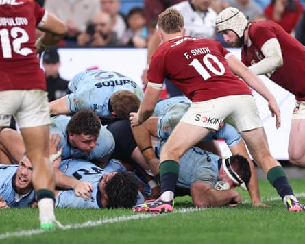
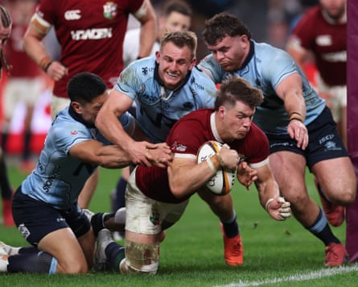

So much for the theory that the British & Irish Lions are building smoothly towards the start to the Test series against the Wallabies. Exactly how many members of this Lions team will feature in the first Test starting XV remains to be seen but here was a reminder that Australian opposition are not necessarily going to wave their visitors through when the bigger games come around.
It took a 54th-minute try by the scrum-half, Alex Mitchell, to save his side’s blushes in an encounter that will sit uneasily with the management at this delicate stage of the trip. Two first-half tries from the alert Huw Jones, some strong scrummaging and a typically energetic display from Ben Earl in the back row were among a rather short list of positives with the first match of the best-of-three Test series less than a fortnight away.
Instead it was an evening mostly notable for fumbled balls, constant breaks in play and a gritty effort from the home pack. Few had been expecting much, given the last team from New South Wales to beat the Lions did so in 1959, but the Waratahs did an excellent job of dragging their guests down to earth. There is plenty to ponder for all concerned, including Owen Farrell, who was watching from the stands having officially joined the tour.
Nobody involved could really blame the conditions. Clive James wrote poetically about the “crushed diamond water” of Sydney harbour beneath “a sky the texture of powdered sapphires” and both had been in glorious evidence earlier in the day. The light coating of dew on the pitch, though, contributed to enough handling errors to make the contest much scrappier than the touring team would have liked.
Frustratingly for the Lions, too, there had been significant disruption to their hopeful advance plans. Henry Pollock had to withdraw with a tight calf before kick-off, prompting a reshuffle that meant Scott Cummings was promoted from the bench and Tadhg Beirne was switched to the blindside flank. Duhan van der Merwe was a late addition to the matchday squad, scuppering the intended 6-2 forward-dominated bench split.
Ethan Dobbins dots down to keep Waratahs in the hunt at 10-14.Photograph: Cameron Spencer/Getty Images
They did still have some cohesive partnerships, however, and the all-Scottish centre pairing of Sione Tuipulotu and Jones were soon combining sweetly, the former producing a cunning no-look offload to send his partner scampering over. There was to be a further illustration of Jones’s skill set eight minutes before the interval when some nifty footwork close to the line brought him his second of the game and his third try in four days.
A desire to keep a close eye on the Wallabies’ new star Joseph-Aukuso Suaalii may yet increase the case for Ireland’s hard-tackling Garry Ringrose at 13 if the latter shows up well in Canberra on Wednesday. At least Jones can tell himself he could not done much more and has presented the management with a genuine dilemma.
The Waratahs, for their part, had a potential score for flanker Charlie Gamble ruled out for obstruction in the preceding maul, but enjoyed a touch more fortune when a vigorous clear-out in the buildup to their first try by Darby Lancaster was ruled as legal. Once again, though, protracted analysis of inconclusive slow-motion replays in a fast-paced contact sport remains a passion killer for live spectators and television viewers alike.
Hugo Keenan will also not want endless replays of the tackle that temporarily floored, but did not stop, Lancaster’s surge down the left. Less than two minutes after the restart, the home side scored again, the hooker, Ethan Dobbins, being propelled over by a well-organised driven maul.
Suddenly it was 14-10 and the Lions were looking over their shoulders. They were also failing to take some clear chances. Josh van der Flier could not quite ground the ball in the left corner when a try looked all but certain and shortly afterwards Mack Hansen kicked ahead when he might have kept the ball in hand and taken on the cover.
They were suitably grateful, therefore, to the quick-witted Mitchell for dummying the cover to reboot the contest and ease the tension, even if the visitors’ overall performance did not match the setting. The new Allianz Stadium, next door to the evocative Sydney Cricket Ground, has been built on the same site as its predecessor and is an impressive state-of-the-art facility. All Australian rugby needs now is a national team to match the quality of their arenas – and preferably quickly.
NSW Waratahs defenders can not prevent Huw Jones from going over the line for his second try in the first half.Photograph: Cameron Spencer/Getty Images
In addition to the Lions series, the pressure is on to improve their eighth position in the World Rugby rankings, with the draw for the next men’s World Cup, to be staged here in 2027, due to take place in January. It would not be a great look if the Wallabies were to bow out prematurely at their own tournament as England did in 2015, which makes the rest of this year hugely significant.